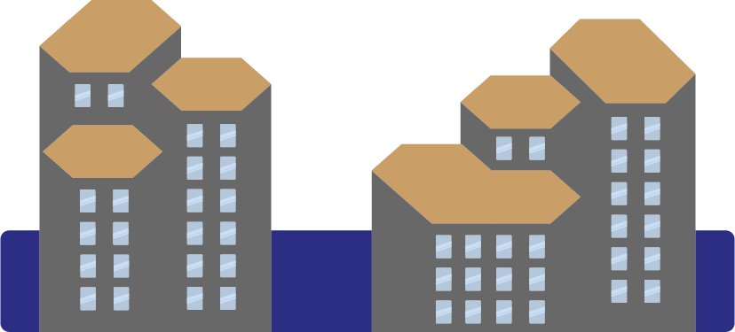
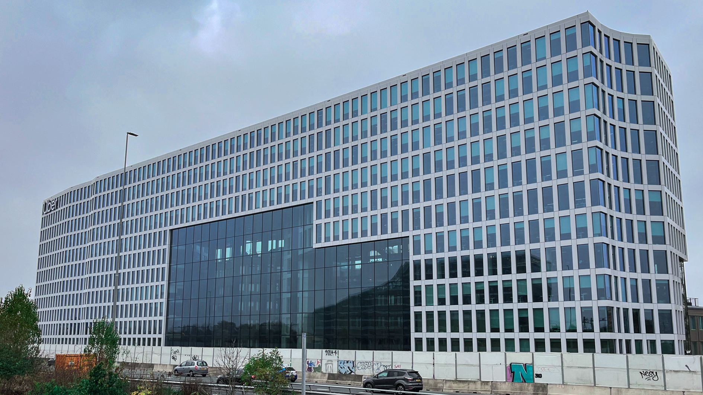

oorsprong
Ik sprak met Peter Groeneweg, locatie manager van Tripolis-Park, en volgde een rondrleiding door de gebouwen. Hij vertelde mij over de oorsprong van de gebouwen.
Tripolis-Park bestond uit een aantal kantoorgebouwen. Deze gebouwen hadden een laag energielabel en weinig duurzaamheid. Een aantal jaar geleden nam Tripolis-Park een compleet andere wending door een zeer duurzame renovatie te starten. Bij deze renovatie is er een nieuw gebouw over de oude kantoorbouwen geplaats en zijn de oude gebouwen in tact gebleven.
Het nieuwe gebouw over Tripolis-Park
Het nieuwe gebouw is gebouwt met veel duurzame initiatieven, zoals groene daken, duurzame verwarming, energiebesparingsmethodes en meer. Deze initiatieven zijn ook op de oude gebouwen toegepast. Hier kunt u meer over vinden op de pagina 'Duurzaamheid'.